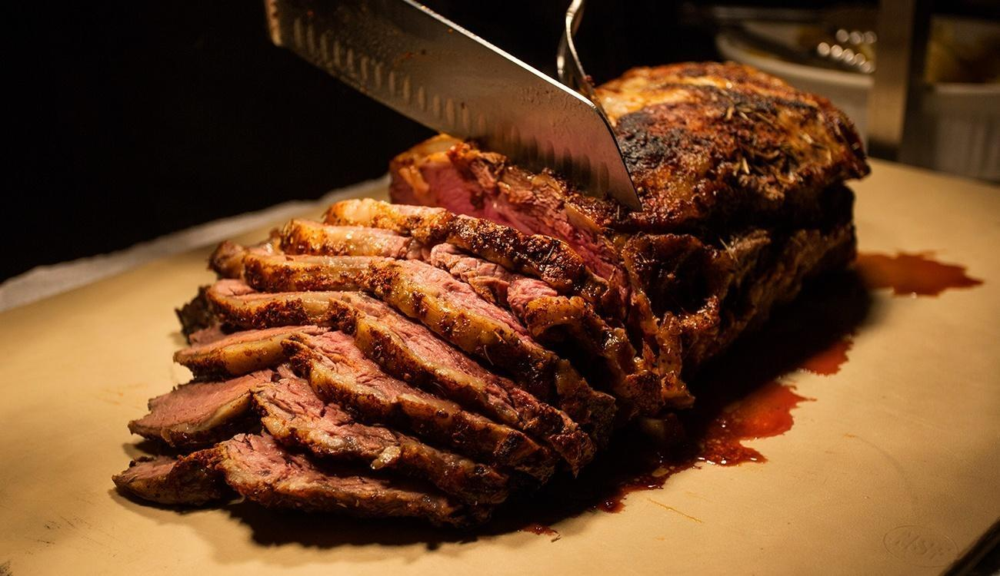

Considered probably the most popular and "noble" Brazilian beef cut, maminha is a beef cut from Brazil that best corresponds to the mix of the US flank and bottom sirloin. However, some sources will also say it corresponds to the US tri-tip cut. In any case, it is a very versatile cut, and in Brazil and South American countries, it is typically barbecued but can also be roasted whole, cubed and stewed, or cut into steaks and pan-fried.
Meal prep time : 4 hours 30 minutes
Servings : 6